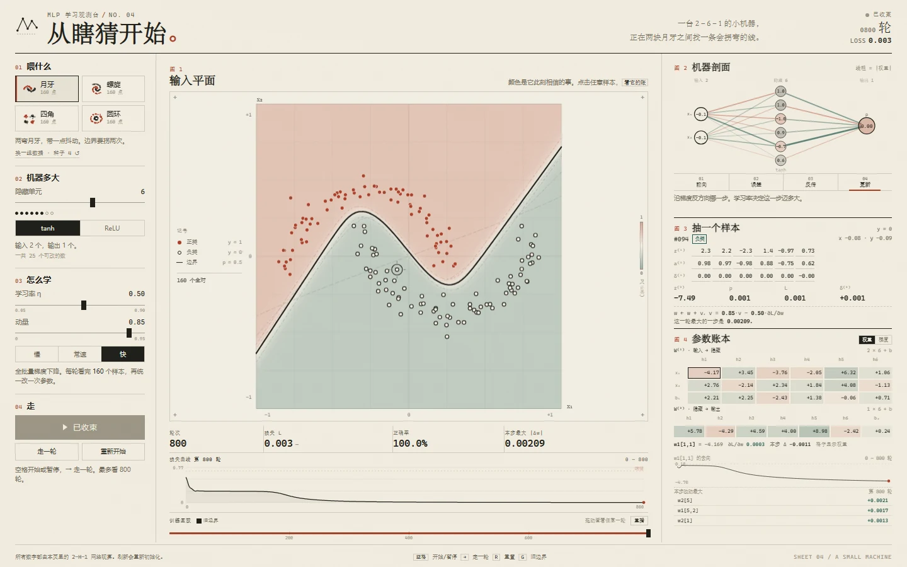
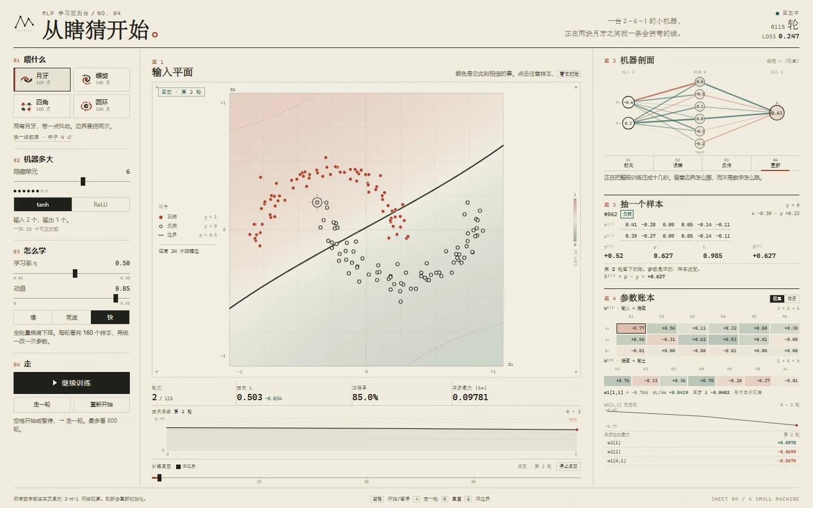
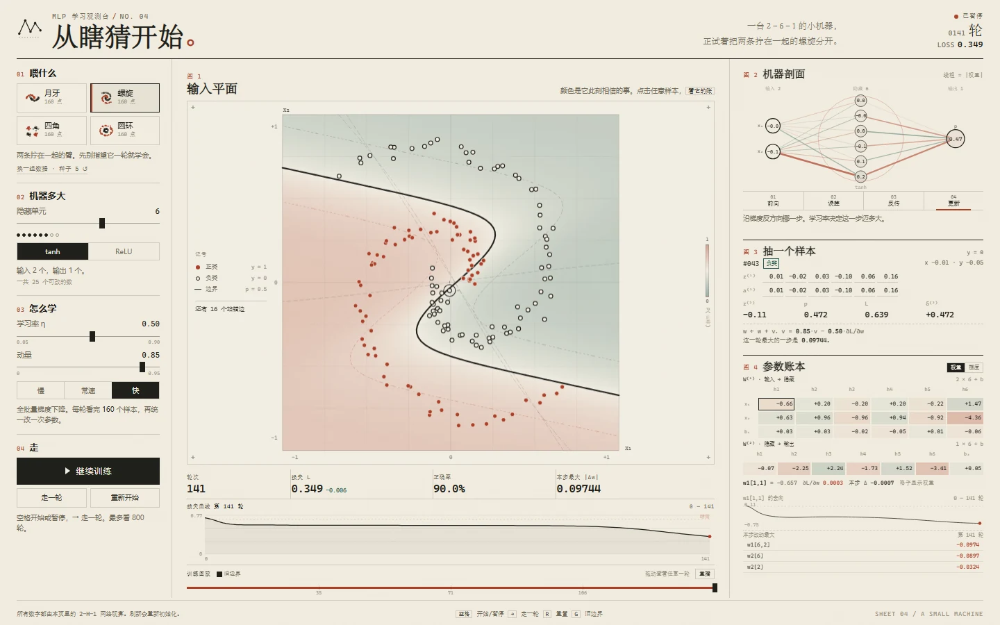

「从瞎猜开始」：把一台 2–6–1 的小机器摊在桌面上
我想看的不是一条画好的边界，而是它从一条歪线变成月牙的那十几秒。
教科书上的说法是：几个隐藏单元就足够切出两块月牙。这句话是对的，但它没告诉我第几轮之前模型还在瞎猜，也没说清楚那六个单元的形状是从哪一步开始弯的。于是我把网络压到能一眼看完的尺寸，把所有省下来的地方都留给“过程”。
为什么是 25 个参数
两个输入、六个隐藏单元、一个输出。权重和偏置加起来刚好 25 个，一张表就能摆完，不需要滚动，也不需要折叠。网络小到可以整段打印出来，读者才有可能相信“这里没有藏东西”。
- 结构
- 2–6–1
- 参数
- 25
- 激活
- tanh
- 上限
- 800 轮
- 样本
- 160
- 损失
- BCE
代价是它只能画一条边界。但这正是我想看的东西：一条边界是怎么被 25 个数 推 出来的。
数据：160 个点，先给两块月牙
月牙（two moons）是我最常用的起点。它线性不可分，但也不至于像螺旋那样欺负人：两类各 80 个点，加一点抖动，边界要拐两次。网络如果能拐过这两个弯，就说明隐藏层真的在做事。
页面上还能换另外三组：
- 螺旋：两条搅在一起的臂，先别指望它一轮就学会。
- 四角：对角同色，和 XOR 同构，一条直线绝对分不开。
- 圆环：里外两类，考验的是“能不能围出一个圈”。
换数据会重新撒种子，参数也跟着回到随机初始化。这里没有“上次训练好的权重”这种东西。
一轮到底算了什么
没有预训练权重，也没有录好的动画。你在页面上看到的每个数，都来自当前这一轮的四步。
前向
对每个样本 (x₁, x₂)，先算隐藏层 z⁽¹⁾ = W⁽¹⁾x + b⁽¹⁾，过 tanh 得到激活 a⁽¹⁾；再算输出的 z⁽²⁾ = W⁽²⁾a⁽¹⁾ + b⁽²⁾，最后 sigmoid 成概率 p。
损失
二元交叉熵，160 个样本取平均：
L = −(1/N) Σ [ y·ln p + (1 − y)·ln(1 − p) ]曲线上的那个点就是它，不前不后。页面上写着“损失 L：0.003”的时候，这个数是这一轮真的算出来的，不是我挑的一张好看的截图。
反传
输出层的误差 δ⁽²⁾ = p − y，往回推一层，tanh 的导数是 1 − a²：
δ⁽¹⁾ = δ⁽²⁾ · W⁽²⁾ · (1 − a⁽¹⁾²)梯度就是这些 δ 和上一层激活值的外积。点开“抽一个样本”，你能看到某一个点在这一轮里分到了多少责任。
更新
v ← 0.85 · v − 0.50 · ∂L/∂w
w ← w + v0.85 是动量，0.50 是学习率，都在左侧可以拖。全批量训练，一轮只更新一次，所以时间轴上的每一格都代表“又看完了 160 个样本”的样子。
看见它学会
图 1 是第 800 轮。背景是被染色的概率场：朱红是模型觉得更像正类的地方，青是负类。中间那条粗线是 p=0.5 的等值线，也就是决策边界。更淡的几条线是更早轮次留下的边界——训练走过的路没有被擦掉。

图 2 把时间轴拖回第 2 轮。同一组样本，同一个网络，边界是一条几乎随机的斜线。准确率显示 85%，但那只是因为它把多数类猜对了。这是我最想让人看到的一帧：所谓“学会了”，中间有一大段看起来毫无道理的时间。

图 3 换到螺旋。6 个隐藏单元只够画出一条粗糙的 S，左边那几个点怎么调都进不去。容量不够的时候，画面会诚实地告诉你不够。

把账摊开
页面右下角是那 25 个参数。每个格子同时写着三样东西：权重、这一轮的梯度、这一轮实际走了多远。格子的深浅是权重的绝对值，颜色是符号——青为正，朱红为负。
点一个格子，下面会画出它从第 0 轮到当前轮的去向。你会看到有的参数一路单调地走，有的先冲过头再退回来，还有几个从头到尾几乎不动：它们对应的隐藏单元压根没被用起来。
参数不是“想”出来的，是被梯度和动量一格一格推出来的。账本只是把它写下来。
它做不到的事
- 它不会自己变好。刷新页面，参数重新随机，网络回到什么都不会的状态。没有缓存，也没有“上次训练好的结果”。
- 它会卡住。初始化不好的时候，六个单元里有两三个会死在 tanh 的饱和区，边界停在一条直线上。换个种子，或者加一个单元，通常就能出来。
- 它不是通用的。2–6–1 只能画一条边界。想看懂更深的网络，这张桌子就不够大了。
怎么打开它
观测台是单文件，没有依赖，直接在这里看：
几个开关值得先记住：空格 开始 / 暂停，→ 单步一轮，R 重来，G 叠加历史边界。左侧可以换数据、改隐藏单元数和激活函数、拖学习率与动量；速度有四档，最快那档 800 轮十几秒就过完。
如果只打算看一处，我建议先按 R 重来，然后把时间轴拖到第 1、2、5 轮，看那条边界是怎么从歪线开始弯的。